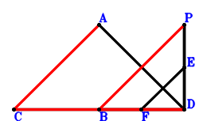
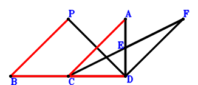
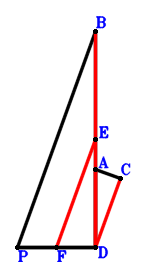

Exercise 493： Let PBDE be a parallelogram. CA⊥BP and CD⊥DP. Given that C, B, D are collinear and A, D, E are collinear, prove that BD\(\cdot\)CD=AD\(\cdot\)DE.
Exercise 522： Let E, F be the midpoints of PD, BD, respectively. AD⊥FE and CD⊥DP. Given that C, B, D are collinear and CA//BP, prove that \(BD·CD=BP·CA\).

\(\because \) E is the midpoint of PD \(\therefore \small\overrightarrow{DE}=\dfrac{\small\overrightarrow{DP}}{2}\).\(\because \) F is the midpoint of BD \(\therefore \small\overrightarrow{DF}=\dfrac{\small\overrightarrow{DB}}{2}\).\(\because \) CD⊥DP \(\therefore \small\overrightarrow{DC} \cdot \small\overrightarrow{DP}=0\) . . . . . . \(①\)\(\because \) AD⊥FE \(\therefore \small\overrightarrow{DA} \cdot \small\overrightarrow{EF}=\small\overrightarrow{DA} \cdot \left(- \small\overrightarrow{DE} + \small\overrightarrow{DF}\right)=\small\overrightarrow{DA} \cdot \left(\dfrac{\small\overrightarrow{DB}}{2} - \dfrac{\small\overrightarrow{DP}}{2}\right)=\dfrac{\small\overrightarrow{DA} \cdot \small\overrightarrow{DB}}{2} - \dfrac{\small\overrightarrow{DA} \cdot \small\overrightarrow{DP}}{2}=0\) . . . . . . \(②\)In conclusion, \(\small\overrightarrow{BP} \cdot \small\overrightarrow{CA} - \small\overrightarrow{DB} \cdot \small\overrightarrow{DC}=- \small\overrightarrow{DB} \cdot \small\overrightarrow{DC} + \left(\small\overrightarrow{DA} - \small\overrightarrow{DC}\right) \cdot \left(- \small\overrightarrow{DB} + \small\overrightarrow{DP}\right)=- \small\overrightarrow{DA} \cdot \small\overrightarrow{DB} + \small\overrightarrow{DA} \cdot \small\overrightarrow{DP} - \small\overrightarrow{DC} \cdot \small\overrightarrow{DP}=-①-2\cdot②=0\)\(\because\) C, B, D are collinear and CA//BP \(\therefore\) \(BD·CD=BP·CA\).
Exercise 532： Let CADE be a parallelogram. BD⊥DE and PD⊥DC. Given that P, A, D are collinear and AC//PB, prove that \(AD·PD=AC·PB\).
Exercise 580： Let E be the midpoint of CF and AD. BD⊥DA and PD⊥DF. Given that B, C, D are collinear and CA//BP, prove that \(BD·CD=BP·CA\).

\(\because \) E is the midpoint of AD \(\therefore \small\overrightarrow{DE}=\dfrac{\small\overrightarrow{DA}}{2}\).\(\because \) E is the midpoint of CF \(\therefore \small\overrightarrow{DF}=- \small\overrightarrow{DC} + 2 \small\overrightarrow{DE}=\small\overrightarrow{DA} - \small\overrightarrow{DC}\).\(\because \) BD⊥DA \(\therefore \small\overrightarrow{DA} \cdot \small\overrightarrow{DB}=0\) . . . . . . \(①\)\(\because \) PD⊥DF \(\therefore - \small\overrightarrow{DF} \cdot \small\overrightarrow{DP}=- \small\overrightarrow{DP} \cdot \left(\small\overrightarrow{DA} - \small\overrightarrow{DC}\right)=- \small\overrightarrow{DA} \cdot \small\overrightarrow{DP} + \small\overrightarrow{DC} \cdot \small\overrightarrow{DP}=0\) . . . . . . \(②\)In conclusion, \(\small\overrightarrow{BP} \cdot \small\overrightarrow{CA} - \small\overrightarrow{DB} \cdot \small\overrightarrow{DC}=- \small\overrightarrow{DB} \cdot \small\overrightarrow{DC} + \left(\small\overrightarrow{DA} - \small\overrightarrow{DC}\right) \cdot \left(- \small\overrightarrow{DB} + \small\overrightarrow{DP}\right)=- \small\overrightarrow{DA} \cdot \small\overrightarrow{DB} + \small\overrightarrow{DA} \cdot \small\overrightarrow{DP} - \small\overrightarrow{DC} \cdot \small\overrightarrow{DP}=-①-②=0\)\(\because\) B, C, D are collinear and CA//BP \(\therefore\) \(BD·CD=BP·CA\).
Exercise 599： Let E, F be the midpoints of BD, PD, respectively. AC⊥PB and PD⊥DA. Given that B, A, D are collinear and DC//FE, prove that \(AD·BD=2·DC·FE\).

\(\because \) E is the midpoint of BD \(\therefore \small\overrightarrow{DE}=\dfrac{\small\overrightarrow{DB}}{2}\).\(\because \) F is the midpoint of PD \(\therefore \small\overrightarrow{DF}=\dfrac{\small\overrightarrow{DP}}{2}\).\(\because \) PD⊥DA \(\therefore \small\overrightarrow{DA} \cdot \small\overrightarrow{DP}=0\) . . . . . . \(①\)\(\because \) AC⊥PB \(\therefore \small\overrightarrow{BP} \cdot \small\overrightarrow{CA}=\left(\small\overrightarrow{DA} - \small\overrightarrow{DC}\right) \cdot \left(- \small\overrightarrow{DB} + \small\overrightarrow{DP}\right)=- \small\overrightarrow{DA} \cdot \small\overrightarrow{DB} + \small\overrightarrow{DA} \cdot \small\overrightarrow{DP} + \small\overrightarrow{DB} \cdot \small\overrightarrow{DC} - \small\overrightarrow{DC} \cdot \small\overrightarrow{DP}=0\) . . . . . . \(②\)In conclusion, \(\small\overrightarrow{DA} \cdot \small\overrightarrow{DB} + 2 \small\overrightarrow{DC} \cdot \small\overrightarrow{EF}=\small\overrightarrow{DA} \cdot \small\overrightarrow{DB} + 2 \small\overrightarrow{DC} \cdot \left(- \small\overrightarrow{DE} + \small\overrightarrow{DF}\right)=\small\overrightarrow{DA} \cdot \small\overrightarrow{DB} + 2 \small\overrightarrow{DC} \cdot \left(- \dfrac{\small\overrightarrow{DB}}{2} + \dfrac{\small\overrightarrow{DP}}{2}\right)=\small\overrightarrow{DA} \cdot \small\overrightarrow{DB} - \small\overrightarrow{DB} \cdot \small\overrightarrow{DC} + \small\overrightarrow{DC} \cdot \small\overrightarrow{DP}=①-②=0\)\(\because\) B, A, D are collinear and DC//FE \(\therefore\) \(AD·BD=2·DC·FE\).
Exercise 796： Let CD⊥BP and AD⊥DP. Given that A, B, D are collinear and AC//BP, prove that \(AD·BD=AC·BP\).